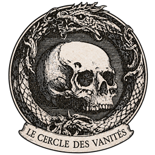

Échange
Contacter Gianrico Gualtieri
Pour toute question sur une œuvre, la démarche artistique ou une exposition, écrivez directement à Gianrico.
Un échange autour de la peinture
Votre message
Votre logiciel de messagerie s’ouvrira avec l’adresse de Gianrico et un objet déjà renseignés.
Écrire à GianricoUn lien avec l’artiste
Suivre Gianrico

Association
Découvrez aussi
Le Cercle des Vanités